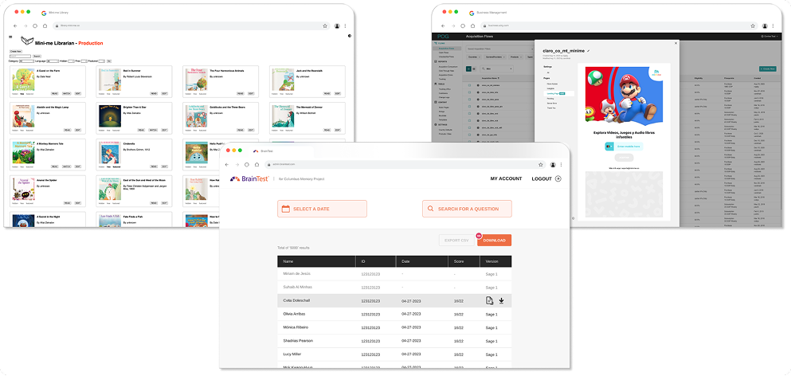

Overview
At AirG, I identified opportunities to optimize internal tools that supported both product and customer care teams. These tools were essential for daily operations but had usability challenges that slowed productivity.
The goal was to modernize interfaces, simplify tasks, and enhance overall team efficiency through thoughtful UX redesign.
Challenge
Legacy tools had inconsistent layouts, redundant steps, and limited visibility into data — forcing teams to rely on workarounds and manual updates.
My Role
As Product Designer, I led the UX audit, collaborated with developers, and proposed a series of iterative design improvements to make the tools more intuitive and efficient.
Key Responsibilities:
- Conducted workflow analysis with internal teams
- Created wireframes and prototypes addressing key pain points
- Streamlined navigation and reduced cognitive load
- Collaborated with engineers to implement UI consistency
Design Highlights
- Unified Interface: Consolidated fragmented dashboards into a single, clear view.
- Task Efficiency: Reduced repetitive steps through better automation and grouping.
- Visual Clarity: Introduced clean layouts and consistent design patterns for faster scanning.
Results
- Increased operational efficiency by 25–40% across content and customer care tools
- Reduced manual entry tasks by 35% via workflow automation
- Cut training time by 50% for new staff using redesigned interfaces
- Boosted internal satisfaction scores by 30% (based on internal survey)
- Enabled teams to handle 20% higher workload without additional resources
Reflection
This project deepened my understanding of UX for operations and B2B efficiency — how small design changes can make large-scale impact across internal teams.
 Back to My
Work
Back to My
Work